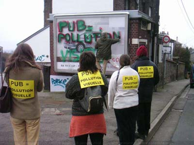

| |
Site dédié à la publication d'informations communiquées par le Collectif des déboulonneurs. En aucun cas ce site n'appelle à des actions illégales. | |
 |
||
|
Accueil du site > Rouen > samedi 28 janvier - 3° barbouillage du Collectif des déboulonneurs (...)
Barbouillage réussi. Le barbouilleur a été embarqué au commissariat où il est resté 3 heures. Une bonne et savoureuse déposition a été faite. 11h - dix-sept activistes non-violents antipub sortent de nulle part et s’approchent d’un dispositif déroulant et lumineux de 3x4, imposé au paysage par JC Decaux. Il fait très froid ce matin-là à ce carrefour où circule à petite allure un flot de voitures, et où les automobilistes sont agressés par la pub de ce panneau situé à la jonction des communes de Rouen et de Mont-Saint-Aignan. Cette placette, si elle était arborée, serait tellement plus jolie ! Aussitôt, le barbouilleur monte sur son escabeau et va écrire lentement et proprement, en lettres épaisses : “PUB = POLLUTION VISUELLE", en couleurs rouge et verte. Un papier blanc de 50x70 cm est collé sur le panneau, avec dessus, les chiffres ” 50 x 70 cm". Chacun des dix-sept activistes a une page A4 sur sa poitrine ou dans le dos avec l’indication ” PUB = POLLUTION VISUELLE". Plusieurs distribuent un tract explicatif aux automobilistes, avec l’indication du site des déboulonneurs. On ignorait comment notre action de barbouillage allait être reçue et comprise. Notre surprise et notre joie ont été totales : que des encouragements, des pouces en l’air, des applaudissements de passagers. Une dame est allée même jusqu’à descendre sa vitre, alors qu’il ne faisait que +1° degrés dehors, pour dire : ” Pour une fois je suis d’accord avec vous !” Comme quoi l’action non-violente sait agir avec pédagogie ! On fait de l’animation, un thermos de thé chaud réconforte les déboulonneurs, on applaudit, on se réchauffe comme on peut… FR3 est là depuis le début, ainsi que d’autres journalistes. 11h20 - deux voitures de police arrivent, gyrophares bleus allumés. L’activiste préposé au rôle d’interface avec la police fait son boulot. Les sept policiers arpentent la placette et finissent par lâcher leur colt que chacun d’eux serrait d’une main à sa ceinture. Le ton est sévère mais courtois. Le barbouilleur est embarqué. Dispersion des manifestants. 
19h - Le Journal télévisé de FR3 Normandie ouvre son édition du soir par… un excellent reportage sur le barbouillage du samedi matin. Les images du barbouillage sont superbes, les propos des activistes antipub bien rapportés, entre autres tout le passage sur l’objectif des déboulonneurs, à savoir un changement de la loi pour instaurer le 50x70 cm. Le commentateur de la chaîne parle en direct de ” non-violence", “du courage des antipub"… On se promet d’écrire à FR3 pour les remercier pour la qualité et l’honnêteté de leur travail. Remarque : les barbouillages réussis, réalisés juste précédemment au Mans et à Paris, ont dopé les acteurs de Rouen ce samedi 28 janvier. N’avoir que des automobilistes pour spectateurs est une expérience enrichissante à recommencer. Le tract est une bonne idée. On n’a pas fait de déclaration d’en haut d’un tabouret car le lieu ne s’y prêtait pas. Nous n’étions que 17 activistes non-violents, c’était trop peu. Des copains avaient des partiels, d’autres ont eu peur du froid…, alors que nous étions 50 à l’action du 23 décembre. Bientôt le printemps, d’ailleurs la naissance des agneaux dans les fermes de Normandie en témoigne ! Rendez-vous le 4° vendredi ou samedi ou dimanche de Février. C’est noté les amis ! D’autres photos sur ce lien et dans notre galerie |
|
Site utilisant SPIP - Hébergement Ouvaton
|